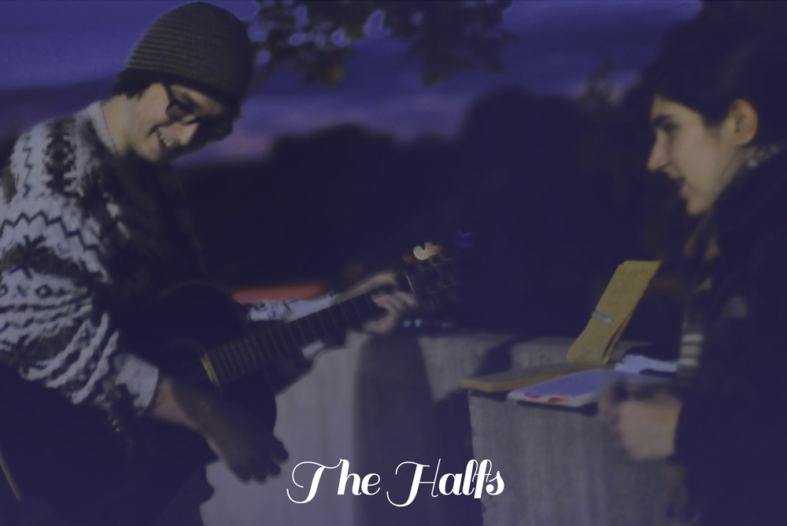

Biography
The Halfs are a folk duo consisting of Jasper Boyd and Nina Petropoulus. The band formed in the fall of 2011 at Clark University, in Worcester. Soon after their formation Nina left Clark, and the group's progress was cut short.
In the spring of 2013 The Halfs released an EP titled Shut Off The Fan! and a single, How Could You?. The group is planning to release an LP which is scheduled to come out at the end of the summer.